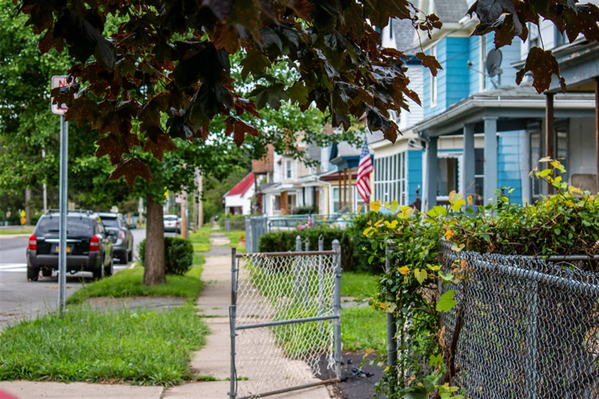
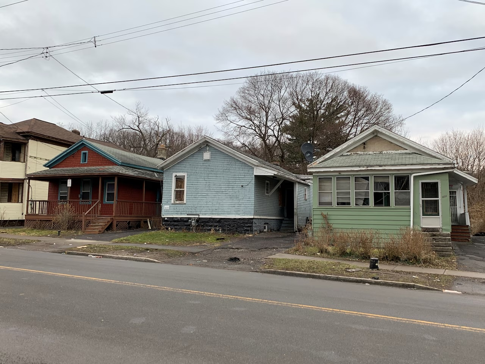

By Matthew Welling

Credit: syr.gov
In Syracuse, more and more properties are being labeled as “unfit for human occupancy,” highlighting a bigger problem with housing safety and code enforcement. City officials use this label when buildings are hazardous, unsanitary, or missing the basic conditions people need to live safely.
According to Syracuse’s senior public information officer, Sol Munoz, “A property is declared unfit by the Director of Code Enforcement after an inspection by the Division of Code Enforcement finds that the property meets any of the criteria found in Section 27-115 of the City of Syracuse Property Conservation Code.” Munoz also stated that despite the increase in the number of properties falling under unfit circumstances so quickly, the process the city goes by on determining if these properties are safe has not been changed.
As listed on Syr.gov, the criteria on deeming a property unfit include:
City data shows that more properties have been declared unfit for human occupancy in recent years, with a sharp increase over the last year. Inspectors give this label when a building threatens health or safety. Often, these buildings lack essentials like ventilation, sanitation, or heat. Sometimes, they are so damaged, decayed, or infested with vermin that they become a serious hazard.
Other data shows these cases are not spread evenly. In many of the properties labeled unfit, the most urgent problems are not just structural damage but the absence of basic necessities like running water and heat. These are not minor inconveniences. They are essential conditions for safe living, especially during Central New York’s harsh winters. City data on water main breaks further highlights how fragile access to water can be, with repeated service disruptions pointing to broader infrastructure issues that can leave residents without reliable water. Their absence raises serious concerns about how housing conditions are monitored and enforced across the city. However, the data is only part of the story.
For tenants, being told their home is unfit often comes after living without reliable heat or water for extended periods. In some cases, residents go days or even weeks without these basic services before action is taken. Without heat, homes quickly become dangerous in colder months. Without water, sanitation breaks down, making everyday life unsafe. When a property is finally declared unfit, tenants are often forced to leave quickly, sometimes without a clear place to go.
The reasons behind these conditions vary, but many cases point to failures in systems that should provide the basics of habitable housing. Broken boilers, shut off utilities, and neglected infrastructure can leave entire buildings without heat or water. In some instances, outages tied to water main breaks can make already unstable situations worse, especially in older neighborhoods where infrastructure is more vulnerable. These issues can escalate quickly, turning already difficult living conditions into serious health risks. In the worst cases, property owners ignore warnings or delay repairs, allowing conditions to deteriorate further.
While some properties are eventually repaired, others remain in poor condition, with essential services still not restored. A lack of consistent heat and water does not just affect individual tenants. It can impact entire neighborhoods, leaving buildings vacant and contributing to broader housing instability.

Credit: syracuse.com
At its core, this issue highlights a breakdown in providing the most basic requirements for housing. Declaring a property unfit is meant to protect public health, particularly when conditions like no heat or water make a home unlivable. But when these problems persist or are not addressed quickly, the process can displace residents without guaranteeing better conditions elsewhere.
As Syracuse continues to confront housing challenges, the persistence of properties without heat or water underscores the urgency of stronger enforcement and faster intervention. Each unfit designation is more than a label. It is a sign that the basic standards of safe living have not been met.
Understanding where and why these failures occur is a critical first step. Addressing them will require not only identifying unsafe properties but ensuring that essential services like heat and water are reliably provided. For now, many residents are left dealing with the consequences, as unfit notices continue to mark homes where the most basic conditions for living are still out of reach.